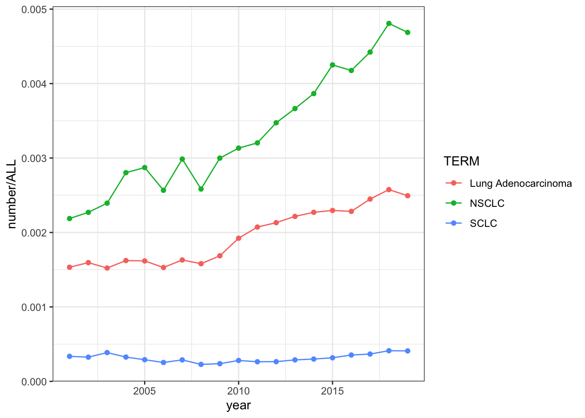
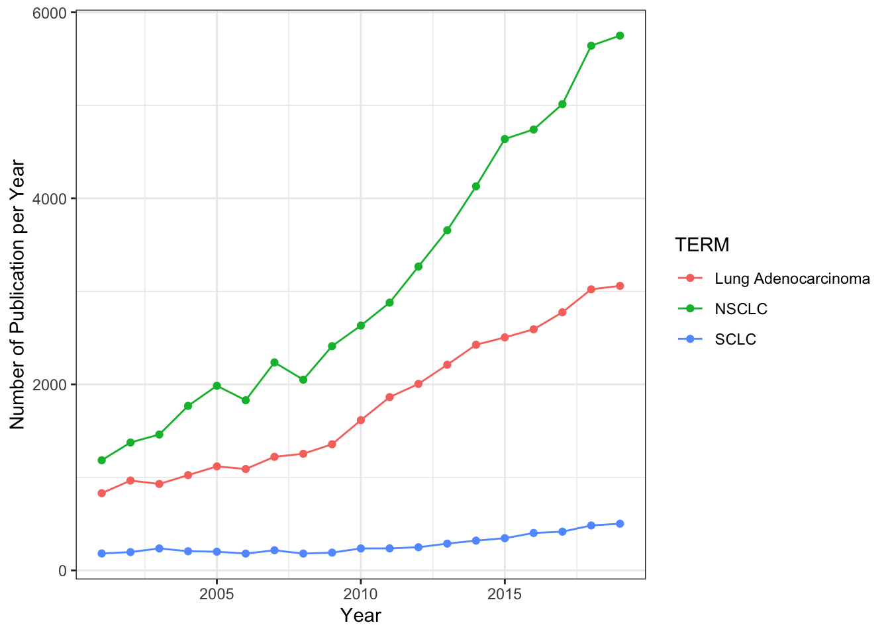

使用yyplot绘制pubmed研究趋势
王诗翔 · 2018-04-13
在准备转博报告的过程中觉得有必要给一些研究添加Pubmed研究趋势，这个功能Y叔在它的公众号推过，所以我记了一下，之前在写开题报告的时候就用了下。今天又重新操作了一番，感觉非常不错，记录一下分享，说不定某些同胞需要。
Y叔把这个功能整合在yyplot包中，该包发布在Github上，所以我们需要用devtools包进行安装：
install.packages("devtools")
devtools::install_github("GuangchuangYu/yyplot")这两个包的安装都有不少依赖包，所以大家安装的时候需要注意下。如果有解决不了的问题，欢迎在下方留言讨论。
Y叔的厉害之处在于它对于ggplot2包的理解非常深，写出包和结果对象基本都直接可以用ggplot展示，或者直接用plot绘制可以得到类似的显示效果。
这里以我探究非小细胞癌、小细胞癌和肺腺癌最近一些年发表的文章数为例子：
library(yyplot)
library(ggplot2)# 键入你要搜索的关键字
term <- c("Lung Adenocarcinoma", "NSCLC", "SCLC")
# 进行检索，指定起止年
pm <- pubmed_trend(term, year=2001:2019)
#> search term: Lung Adenocarcinoma
#> -> querying year 2001
#> -> querying year 2002
#> -> querying year 2003
#> -> querying year 2004
#> -> querying year 2005
#> -> querying year 2006
#> -> querying year 2007
#> -> querying year 2008
#> -> querying year 2009
#> -> querying year 2010
#> -> querying year 2011
#> -> querying year 2012
#> -> querying year 2013
#> -> querying year 2014
#> -> querying year 2015
#> -> querying year 2016
#> -> querying year 2017
#> -> querying year 2018
#> -> querying year 2019
#> search term: NSCLC
#> -> querying year 2001
#> -> querying year 2002
#> -> querying year 2003
#> -> querying year 2004
#> -> querying year 2005
#> -> querying year 2006
#> -> querying year 2007
#> -> querying year 2008
#> -> querying year 2009
#> -> querying year 2010
#> -> querying year 2011
#> -> querying year 2012
#> -> querying year 2013
#> -> querying year 2014
#> -> querying year 2015
#> -> querying year 2016
#> -> querying year 2017
#> -> querying year 2018
#> -> querying year 2019
#> search term: SCLC
#> -> querying year 2001
#> -> querying year 2002
#> -> querying year 2003
#> -> querying year 2004
#> -> querying year 2005
#> -> querying year 2006
#> -> querying year 2007
#> -> querying year 2008
#> -> querying year 2009
#> -> querying year 2010
#> -> querying year 2011
#> -> querying year 2012
#> -> querying year 2013
#> -> querying year 2014
#> -> querying year 2015
#> -> querying year 2016
#> -> querying year 2017
#> -> querying year 2018
#> -> querying year 2019
#> Warning: `rename_()` is deprecated as of dplyr 0.7.0.
#> Please use `rename()` instead.
#> This warning is displayed once every 8 hours.
#> Call `lifecycle::last_warnings()` to see where this warning was generated.# 绘图
plot(pm) + theme_bw()
检索返回的结果可以直接用plot绘制，这里因为我需要添加bw主题，所以导入了ggplot2包，不然可以不使用该包
注意纵坐标是一个比例，该关键字发表文章数与当年文章总数的比例值，我们也可以灵活一点，只绘制发表文章数目：
ggplot(pm, aes(x=year, y=number, color=TERM)) +
geom_point() + geom_line() + theme_bw() +
xlab("Year") + ylab("Number of Publication per Year")
简单吧？感觉作者本身应该还有其他的设计，不过这已经足够我用了。有兴趣大家不妨深入探索一番。
比如它也可以用它来画出某个研究人员，历年来发表文章的数目，比如想看Y叔每年发多少篇文章，下面这行代码给你答案：
pubmed_trend("Yu Guangchuang[Full Author Name]", 2010:2019)